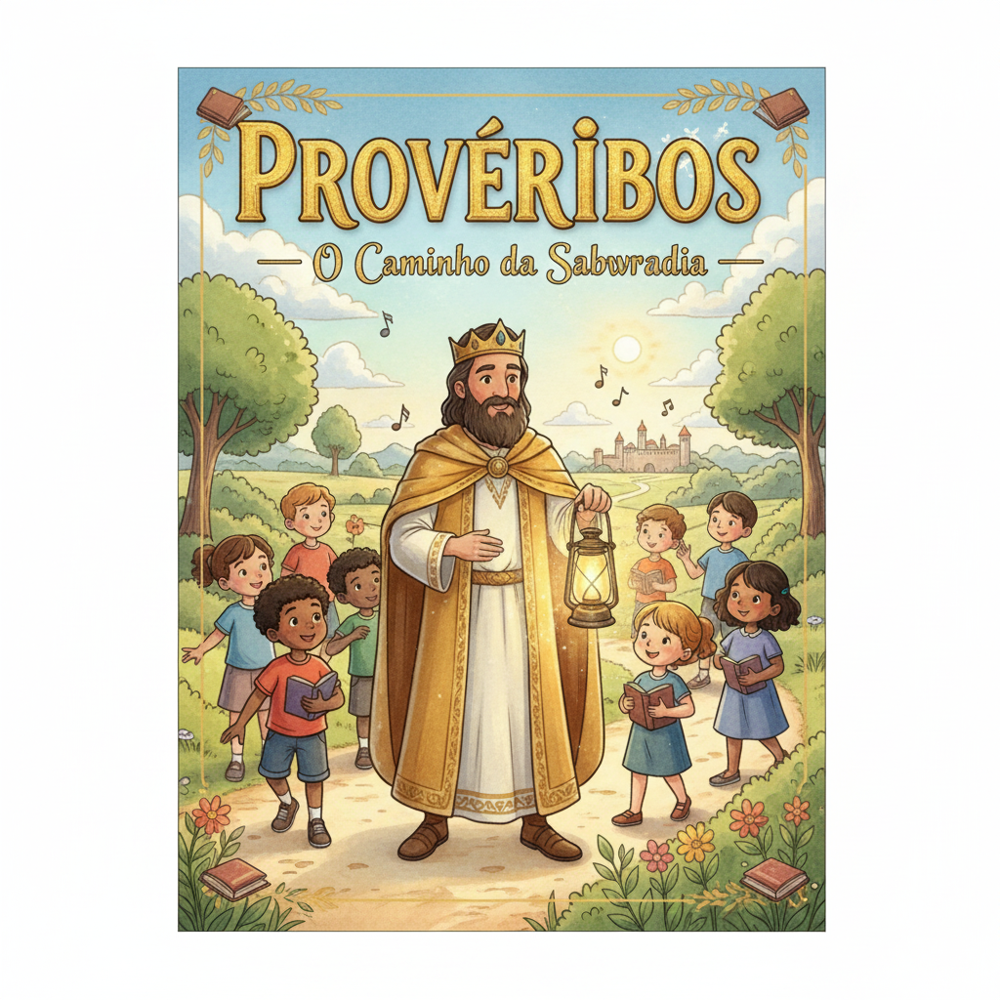
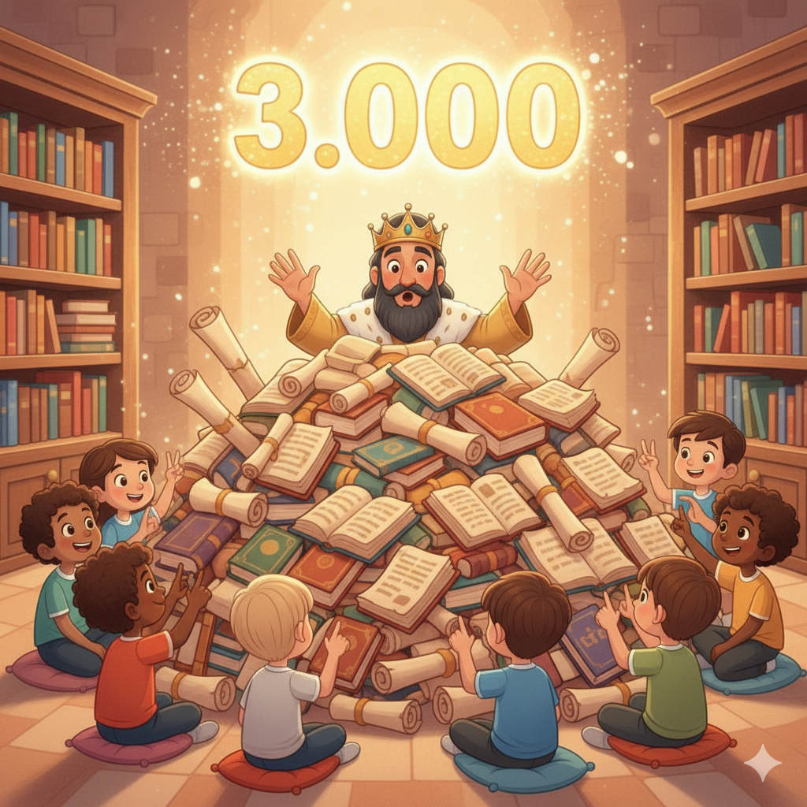

Sabedoria para Cada Dia — Um Resumo Visual para Crianças
Provérbios começa com a melhor lição do mundo,
Que torna tudo claro, não deixa nada no fundo:
O temor do Senhor é o início da sabedoria,
Respeitar e amar a Deus é a maior vitória!
Ser sábio não é saber muito na escola,
É seguir o Senhor — essa é a palavra que consola!
📖 Provérbios 1:7 — "O temor do Senhor é o princípio da sabedoria."
O que você fala importa — Provérbios ensina assim,
Palavras gentis curam; palavras ruins trazem fim!
Pense antes de falar, escolha o que vai dizer,
Uma palavra de amor pode uma vida erguer!
Use sua boca pra abençoar, não pra ferir,
Palavras certas fazem o coração sorrir!
📖 Provérbios 16:24 — "Palavras agradáveis são como favo de mel, doces para a alma e saúde para o corpo."
Cada escolha que fazemos planta uma semente,
Boa ou ruim, ela brota — e isso é evidente!
Confie em Deus e não apenas em seu pensamento,
Ele vai te guiar com amor e discernimento!
Semeie bondade, honestidade e amor,
E colherá bênçãos do nosso bom Senhor!
📖 Provérbios 3:5-6 — "Confia no Senhor de todo o teu coração... e ele endireitará as tuas veredas."
💡
"Confia no Senhor de todo o teu coração e não te apoies no teu próprio entendimento."
Provérbios 3:5
Salomão foi o homem mais sábio que já viveu — e ainda assim disse que precisamos confiar em Deus, não só no que pensamos. Sabedoria de verdade começa em reconhecer que Deus sabe mais do que nós!
Salomão escreveu a maior parte de Provérbios. Deus lhe deu sabedoria como nenhum outro homem teve — ele conhecia plantas, animais, negócios, relacionamentos e muito mais. Mas sua maior sabedoria era reconhecer que tudo vinha de Deus!
📖 Leia na Bíblia — Provérbios 1:7
"O temor do Senhor é o princípio da sabedoria; os loucos desprezam a sabedoria e a instrução."
Agur escreveu o capítulo 30 de Provérbios e começou dizendo que não sabia nada! Ele observava a natureza — formigas, aranhas, águias — e via a sabedoria de Deus em tudo. Às vezes admitir que não sabe é o começo da sabedoria!
📖 Leia na Bíblia — Provérbios 30:24
"Há quatro coisas pequenas sobre a terra, mas mais sábias que os sábios: as formigas..."
O capítulo 31 foi ensinado pela mãe do rei Lemuel. Ela ensinou ao filho como ser um bom líder e descreveu a mulher virtuosa — alguém trabalhadora, generosa e sábia. Um dos textos mais famosos da Bíblia!
📖 Leia na Bíblia — Provérbios 31:10
"Mulher virtuosa, quem a achará? O seu valor muito excede o de rubis."
📖 Leia em casa!
Provérbios tem 31 capítulos — um para cada dia do mês! Que tal ler um capítulo por dia?
🧠 Sabedoria vs. Loucura
Provérbios apresenta dois caminhos: o do sábio (que teme a Deus e aprende) e o do tolo (que acha que já sabe tudo). Qual caminho você vai escolher?
📖 Provérbios 12:15 — "O caminho do tolo é reto aos seus próprios olhos, mas o sábio ouve os conselhos."
💬 Palavras e Relacionamentos
Mais de 100 provérbios falam sobre o poder das palavras — na amizade, na família, no trabalho. Palavras gentis constroem; palavras duras destroem.
📖 Provérbios 16:24 — "Palavras agradáveis são como favo de mel, doces para a alma e saúde para o corpo."
🌱 Trabalho, Família e Escolhas
Provérbios ensina sobre ser trabalhador (não preguiçoso), honrar pai e mãe, ser honesto no comércio e fazer boas escolhas antes de agir por impulso.
📖 Provérbios 6:6 — "Vai ter com a formiga, ó preguiçoso; considera o seu proceder e sê sábio."
Provérbios é o livro mais prático da Bíblia — fala sobre amizade, dinheiro, escola, família, palavras e decisões. É como um guia de como viver bem com Deus e com as pessoas.
📖 Provérbios 3:1-2
"Filho meu, não te esqueças da minha lei; guarda no teu coração os meus mandamentos, pois eles prolongarão os teus dias."
Inteligência é saber muitas coisas. Sabedoria é saber o que fazer com o que você sabe! Provérbios ensina que a verdadeira sabedoria vem do relacionamento com Deus — não de notas altas.
📖 Provérbios 9:10
"O temor do Senhor é o princípio da sabedoria, e o conhecimento do Santo é a inteligência."
O capítulo 8 fala sobre a Sabedoria como uma pessoa — que estava com Deus desde o início da criação. Os cristãos reconhecem isso como Jesus, pois João 1 diz que "no princípio era o Verbo", e Paulo chama Jesus de "sabedoria de Deus" (1 Co 1:24)!
Provérbios foi escrito para que jovens e crianças aprendam a fazer boas escolhas antes de cometer erros. É um livro de conselho de pai para filho — e de Deus para você!
📖 Provérbios 1:4
"Para dar aos simples prudência e ao jovem conhecimento e bom senso."
Provérbios não foca apenas no comportamento externo, mas em formar o coração: ser humilde, honesto, generoso, trabalhador e confiante em Deus. Caráter bom = vida boa!
📖 Provérbios 4:23
"Sobre tudo o que se deve guardar, guarda o teu coração, porque dele procedem as fontes da vida."
🌟 Lição Principal: A vida mais sábia não é a que sabe mais — é a que confia mais em Deus em cada detalhe do dia a dia!
📅 31 capítulos = 31 dias: Provérbios tem exatamente 31 capítulos — um para cada dia do mês! Muitas famílias cristãs leem um capítulo de Provérbios por dia. Em um mês, você lê o livro inteiro!
📝 Salomão escreveu 3.000 provérbios: A Bíblia diz que Salomão compôs 3.000 provérbios (1 Rs 4:32), mas o livro de Provérbios só tem uma seleção. Imagina a sabedoria que ele tinha!
🐜 A formiga como professora: Provérbios 6 manda aprender com a formiga! Ela não tem chefe nem líder, mas trabalha com dedicação o tempo todo. Às vezes os menores têm as maiores lições!

Converse com sua família, turma ou professor sobre essas perguntas!
🧠
Provérbios diz que a sabedoria começa com o temor de Deus — respeitar e amar a Ele. Como você demonstra respeito por Deus no seu dia a dia? No que você precisa melhorar?
💬
Provérbios fala muito sobre palavras — que curam ou machucam. Você já disse uma palavra que magoou alguém? Ou que ajudou alguém de verdade? O que aconteceu depois?
🌱
Provérbios 3:5 diz para confiar em Deus e não só no que você pensa. Tem alguma decisão difícil que você está enfrentando agora? Como você pode pedir a ajuda de Deus nessa situação?
Escolha um desafio (ou faça os três!) e seja um explorador da Bíblia!
📖
Leia o capítulo 3 de Provérbios em voz alta — ele tem os versículos mais famosos do livro! Depois, sublinhe ou anote qual versículo você mais gostou e por quê.
✍️
Escreva "Confia no Senhor de todo o teu coração" (Pv 3:5) em um papel e cole em algum lugar que você vai ver todo dia — espelho, caderno, geladeira!
💬
Durante esta semana, toda vez que você for falar algo, pause um segundo e pergunte: "Essa palavra vai construir ou destruir?" Pratique dizer algo gentil a pelo menos 3 pessoas por dia!
Trilho Kids | Desenvolvido com ❤️ para crianças © 2025